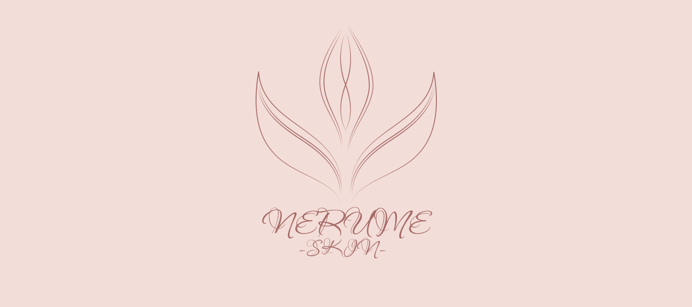
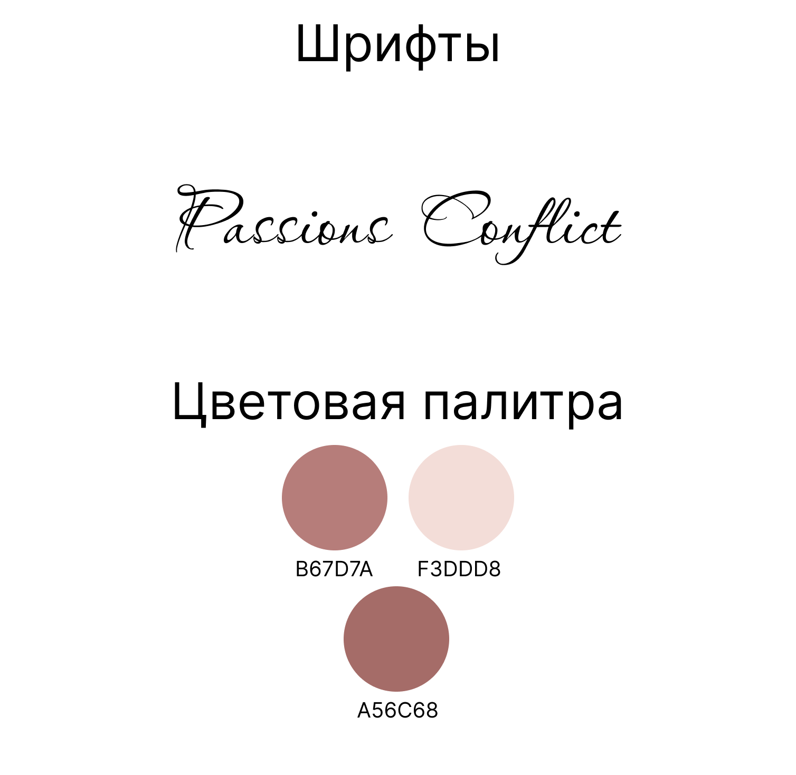
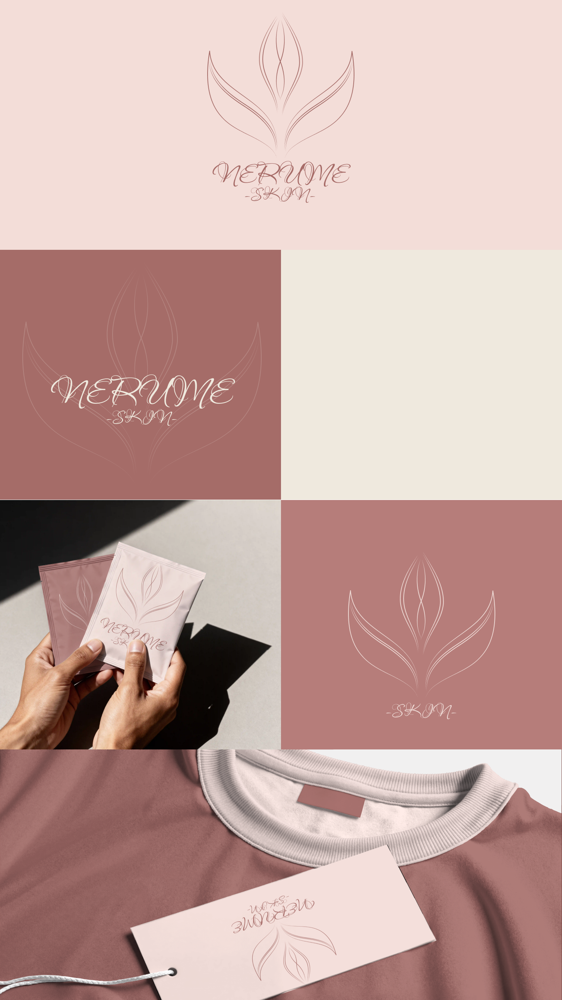

NERUME Skin
Логотип и фирменный стиль бренда ухода за кожей NERUME.

- Клиент
- NERUME Skin — бренд ухода за кожей
- Задача
- Разработать айдентику бренда ухода за кожей NERUME Skin: логотип, знак, фирменную палитру и шрифт, а также показать применение на носителях — саше, бирках и одежде, в позитивном и инверсном исполнении.
- Роль
- Графический дизайнер: каллиграфический логотип, линейный растительный знак, фирменная палитра, сборка мокапов применения.
Бренд ухода за кожей должен читаться как «чистота и деликатность», поэтому знак построен из минимума линий: распустившийся бутон нарисован волосяной линией переменной толщины, где лепестки — это несколько незамкнутых дуг, будто написанных пером в одно движение. Линии не смыкаются в сплошную фигуру, между ними остаётся воздух — знак дышит и не превращается в пятно даже на пыльно-розовом фоне почти в тон.
Логотип набран каллиграфией Passions Conflict — тонкий росчерк «NERUME» с длинными выносными и подписью «skin» вразрядку под ним поддерживает ту же перьевую линию, что и в знаке, поэтому текст и символ читаются как единый росчерк. Палитра из трёх пыльно-розовых тонов (B67D7A, светлого F3DDD8 и более насыщенного A56C68) держится в узком косметическом диапазоне и строится на инверсии: розовая линия на светлом, белая на розовом. Именно близость тонов и тонкость линии дают ощущение аптечной, «кожной» деликатности без единого контрастного элемента.


Айдентика держится на одной перьевой линии — в знаке и в логотипе — и трёх близких тонах, поэтому одинаково работает на саше, бирке и одежде: система строится на инверсии розового и светлого и не требует дополнительных цветов или начертаний при смене носителя.